PRDPT
参数空间平滑 · CVPR 2023邻域采样 → 估计平滑后的更新方向
在当前 θ 附近扰动参数，汇总邻域信息，缓解零梯度平台；参考图固定。
σ 大 → σ 小先看更宽的邻域，再逐渐恢复细节。
所以损失截面会随着 σ 改变。
需要权衡平滑尺度、样本数量与计算成本。
所以损失截面会随着 σ 改变。
用视频生成先验引导逆渲染优化
Haolin Lu · Ishit Mehta · Haodong Li
Yu Fu · Tzu-Mao Li · Ravi Ramamoorthi
University of California San Diego
有了正确的梯度，为什么仍然优化不到正确的解？
梯度描述当前位置的局部变化；找到目标解，还取决于整个损失地形。
房子的初始朝向与目标朝向具有部分视觉相似性。走向正确朝向，可能需要先经过误差更大的区域。
nvdiffrast 提供渲染梯度，优化器沿局部下降方向更新 θ。
直接优化：始终匹配最终目标图，当前梯度可能把参数带到错误的局部最小值。
可微渲染解决“如何求梯度”；本文关注“如何让优化沿着更好的路径前进”。
用初始渲染与目标图像生成过渡视频，将中间帧依次作为优化目标。
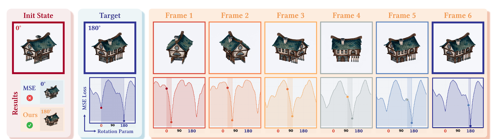
生成的中间帧未必严格符合三维物理，为什么仍可能提供有效的优化引导？
视频提供图像目标；可微渲染器把误差反传到场景参数 θ。
| 场景参数 | 具体优化量 | 论文中的代表案例 |
|---|---|---|
| 位姿 | 旋转、平移、关节旋转 | House / Earth / Skeleton |
| 几何 | 网格顶点、曲线形状 | Bob / Dragon / Suzanne |
| 材质与光照 | 粗糙度 α 贴图、点光源位置 | Teapot / GlossyFloor / Shadow |
视频生成器提前运行；优化的仍是三维场景参数，而不是生成模型的权重。
Numerical continuation：逐步改变问题，并用当前解继续求解下一阶段。
I★(0)=Iinit；中间匹配视频帧；I★(1)=Iref
λ = 0.44 · 匹配视频中间帧
好的中间帧让极小值逐步移动；每阶段只需跟随，不必重新进行大范围搜索。
PRDPT 汇总参数邻域的信息；RGBXY 同时利用颜色与投影位置建立匹配。
在当前 θ 附近扰动参数，汇总邻域信息，缓解零梯度平台；参考图固定。
计算表面点 RGBXY 对 θ 的导数，用最优传输匹配两图。
PRDPT 改善邻域梯度，RGBXY 改善匹配；VNC 改变参考图像的演化，可与两者组合。
PenguinGirl 缺少重叠；SandCastle 近似对称，存在多个错误朝向。
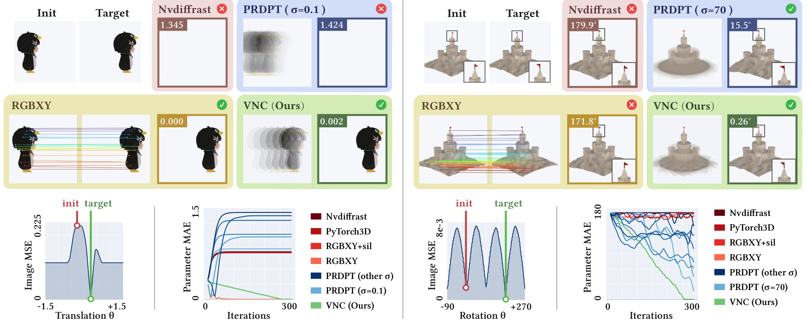
VNC 的长处是提供可跟随的大范围运动；简单平移也可能由良好的对应关系解决。
左组：PenguinGirl 平移；右组：SandCastle 旋转。对应前一页的两个位姿实验。
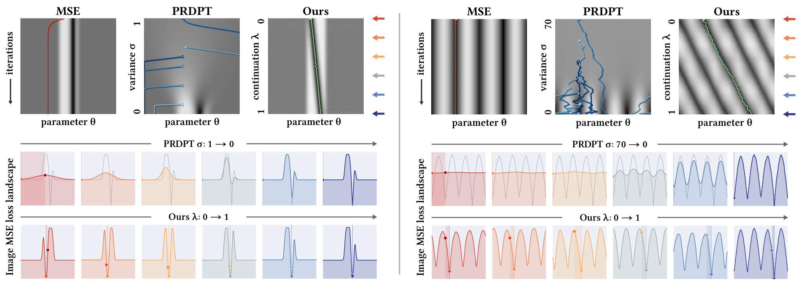
MSE 的目标与损失固定；PRDPT 改变平滑尺度 σ；VNC 改变参考帧。
从一个平移或旋转参数，扩展到复杂的位姿变量与观察条件。
Earth / Furniture
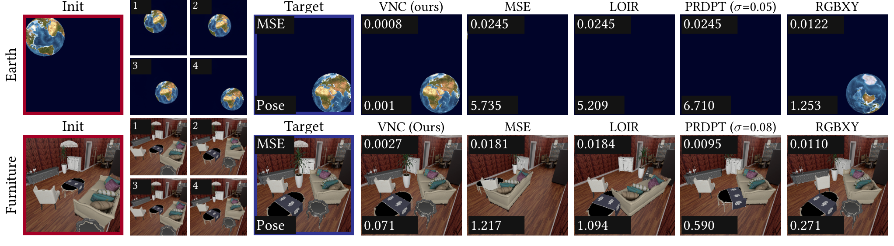
Earth 联合旋转与平移；Furniture 同时调整多个物体的位置与朝向。
StanfordORB · Gnome
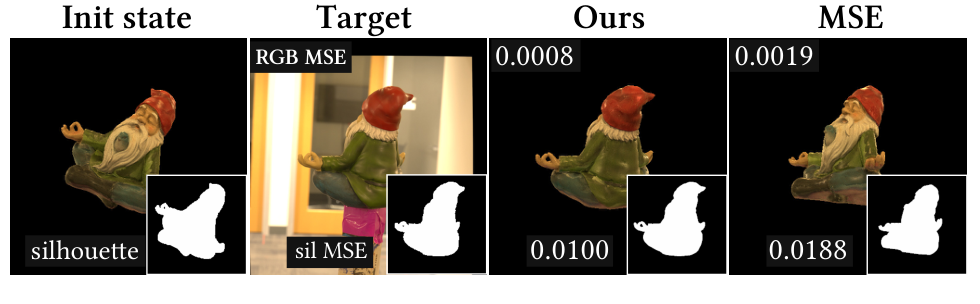
使用 NvdiffrecMC，以 RGB 与轮廓共同监督，匹配真实照片中的目标姿态。
Reflection · Bunny
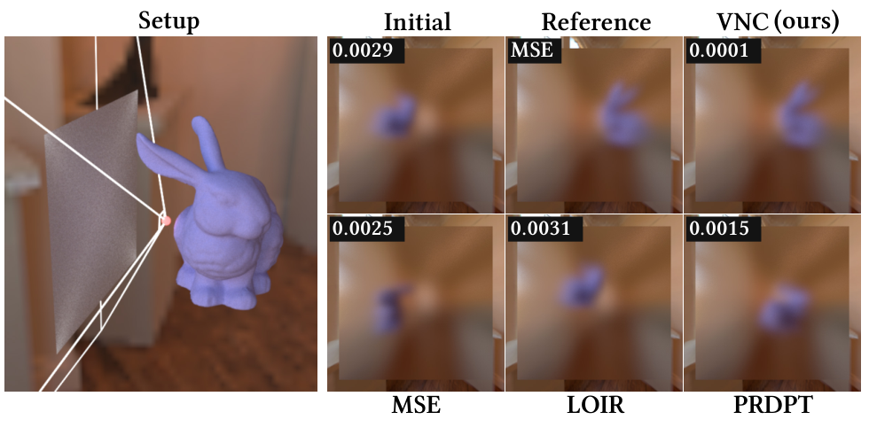
只观察光滑表面中的反射，用 Mitsuba 恢复 Bunny 的 yaw 与 xy 位置。
视频引导可从单参数优化，扩展到多物体、真实图像与间接观察下的位姿恢复。
粗糙度影响反射分布；移动灯光会让高光或阴影跨过不重叠区域。
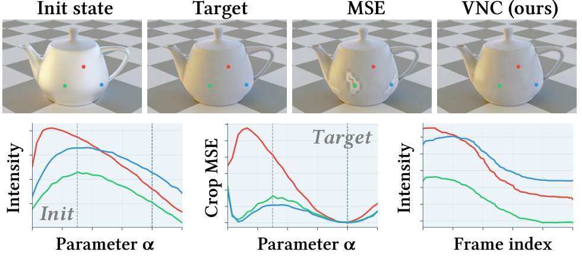
三个点标记 3 个 5 × 5 观察区域，与下方同色曲线一一对应。
VNC：允许绿、蓝区域先变亮，再逐渐变暗，帮助越过局部障碍。
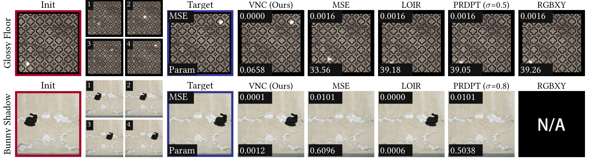
GlossyFloor：MSE 1.62×10⁻³ → 1.91×10⁻⁶
BunnyShadow：VNC 与 LOIR 都能成功。
LOIR（CVPR 2025）：比较局部亮度直方图，并结合多尺度匹配，缓解位置错开时的梯度稀疏。
参考目标可以先远离最终图像的局部外观，帮助参数越过非单调着色的障碍。
Bob 从粗网格逐渐形成孔洞；固定目标容易用错误的表面折叠去拟合阴影。
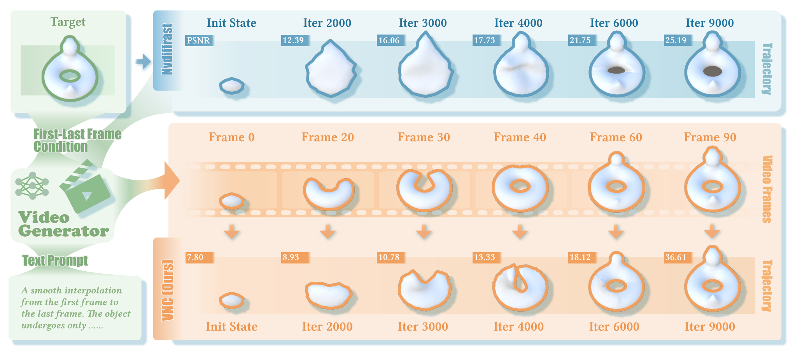
提示词提供形变策略，几何参数化与渲染梯度负责把图像路径落实到三维。
相同首尾帧，不同中间路径，会让优化得到不同的三维解释。
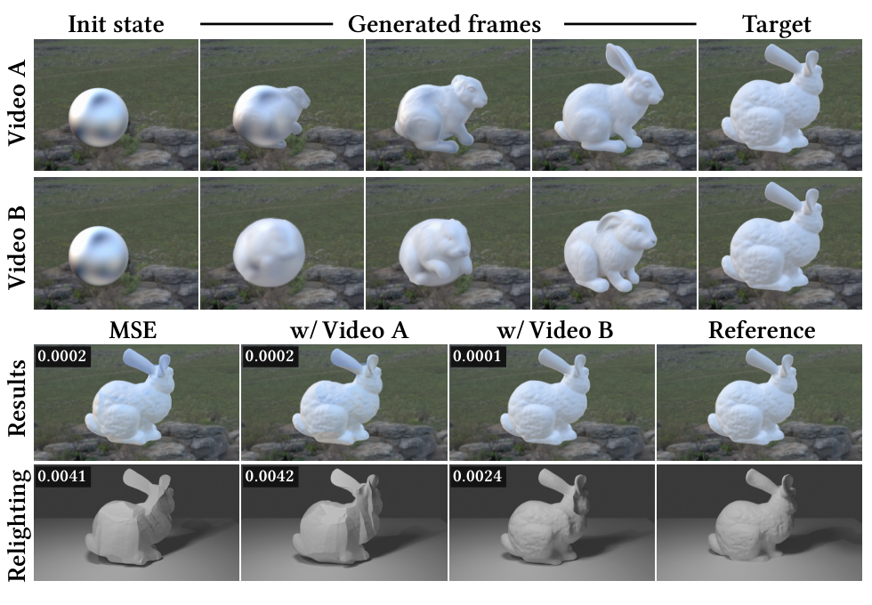
路径可以帮助分解歧义，但独立生成的多视图中间帧不保证来自同一三维状态。
Earth 的大角度旋转中，模型需要猜出两张输入里都看不到的大洋洲。
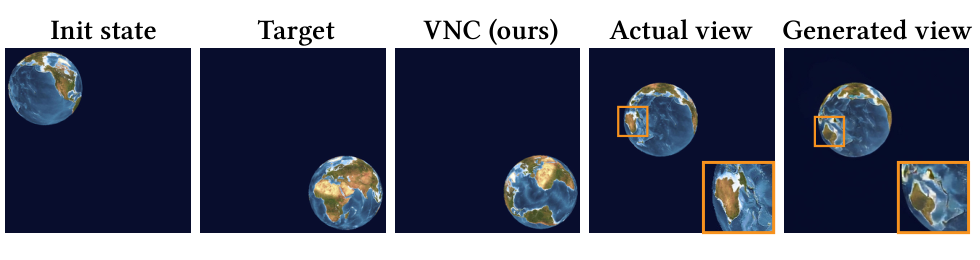
生成纹理与真实固定纹理不一致，改变旋转无法同时修复这些误差。
只优化位姿时，视频不能要求变形或换纹理；独立多视图也可能冲突。
幻觉、光照漂移与 LDR / HDR 差异，会产生错误的优化信号。
即使路径正确，零梯度平台、梯度不稳定或推进过快仍会失败。
视频提供先验，也会引入错误；最终能否成功取决于路径、图像与梯度三者的配合。
视频负责长程路径；已有方法补足局部平台或不稳定匹配。
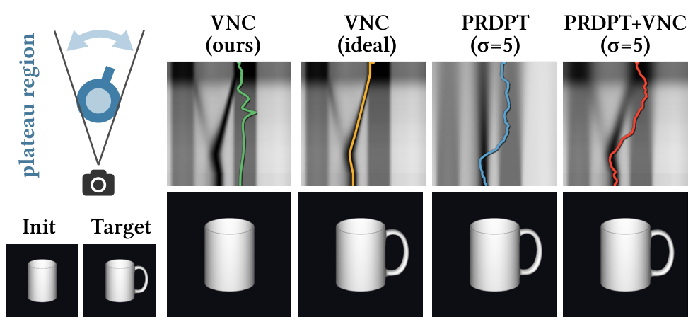
杯柄未显露时，VNC 也无法获得旋转梯度；采样平滑帮助离开平台。
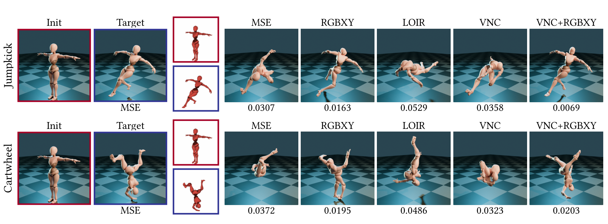
Jumpkick MSE：VNC 0.0358 → 组合 0.0069
组合并非在每个案例、每个指标都最优。
更好的目标序列与更好的局部梯度，是两个可以同时使用的工具。
重复生成、提示词变化和模型选择，都会影响结果。
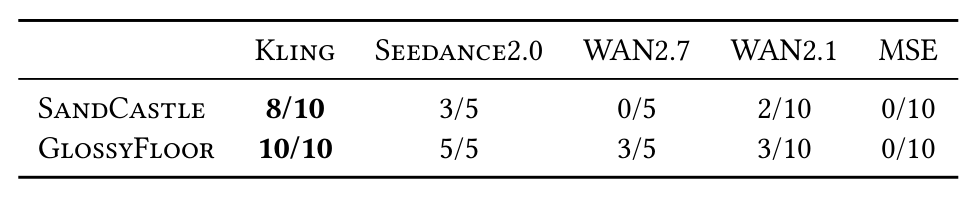
House 优化循环：MSE 0.691 s / VNC 1.016 s。
生成等待可能主导总成本，应计入 Tvideo + Toptimization。
评估应同时报告成功率、参数误差和端到端成本；相同视频也可以被多次实验共享。
可以，尤其是低维问题；VNC 的新意是用生成先验构造一条求解路径。
| 策略 | 更适合解决什么 | 需要付出的代价 |
|---|---|---|
| 枚举 / 多初值 | 单角度、少量参数的候选搜索 | 维度增大后覆盖成本上升 |
| 邻域采样（PRDPT） | 平台与稀疏梯度，改善局部信号 | 需要选择扰动尺度与样本数 |
| 视频路径（VNC） | 大幅运动或形变的目标演化 | 生成成本、错误路径与图像不一致 |
固定几何与相机，先优化光源 / 高光 / 阈值等少量参数，再做贴图精修；以相同总时间比较多初值与 VNC。
判断是否值得用，关键是相同预算下是否更稳、更准，而不是单看一次成功的可视化。